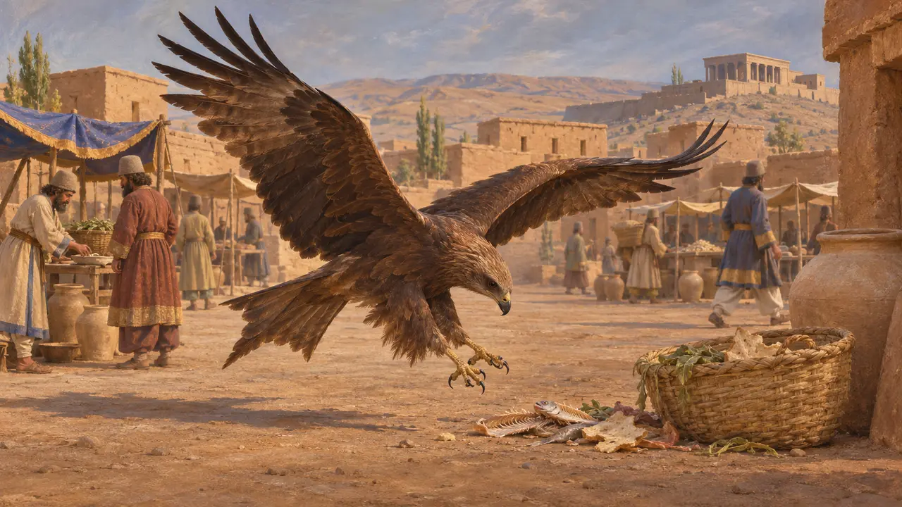
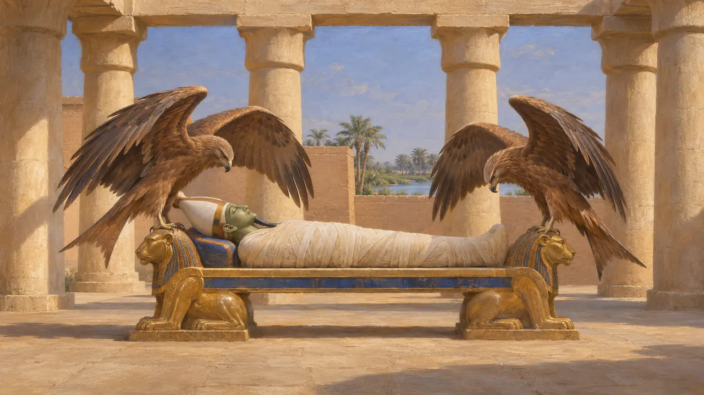
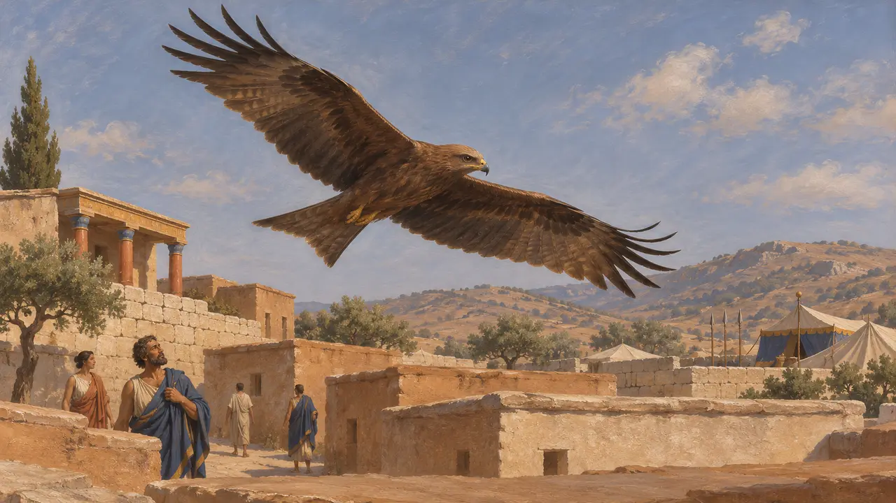
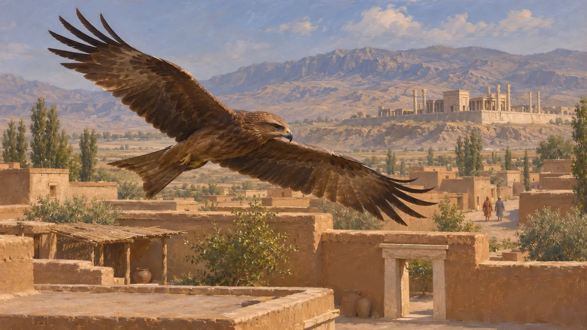
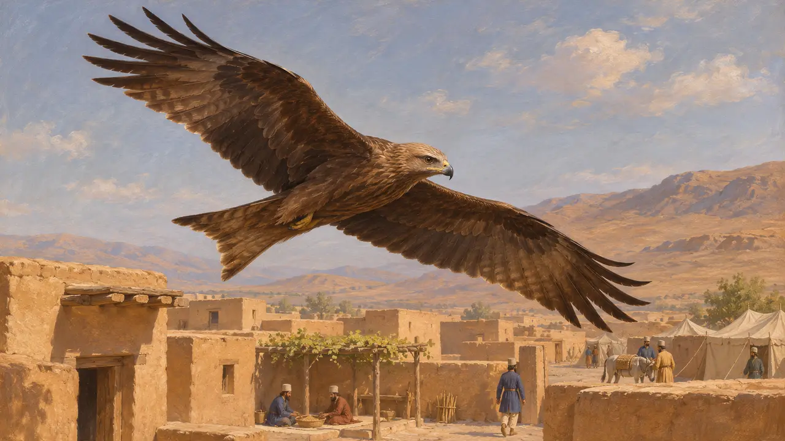

Encyclopedia › Wildlife and weather

The kite
A scavenging bird of prey over the towns and camps of the empire, 6th-5th century BCE
In the game: Level 1: The Founder's Tomb, Level 2: The Spear-bearer, Level 3: The Lie, Level 4: The Terrace, Level 5: The Charter, Level 6: The Bridge of Boats, Level 7: Sardis Burns, Level 8: The Bay of Marathon, Level 9: The Canal, Level 10: The Hot Gates, Level 11: The Finale
The kite is a medium-sized raptor that lives largely by scavenging, and in the Near East and the Mediterranean it was a common sight over towns, camps and markets. The sources of the Achaemenid age say little about it directly. Most of what is known about the bird comes from Greek and Egyptian material and from the habits of the species today.
In the game: The game draws kites as birds overhead on the Pasargadae, Memphis, Bagastana, Parsa, Susa, Ister, Sardis, Marathon, Athos, Thermopylae and Plataea levels. They are scenery only, and no rule reads them.

A scavenger of towns and camps
Ancient accountGreek writers knew the kite as a bird of prey that lived near people. Aristotle, in his works on animals, discusses kites among the birds of prey. The black kite still gathers around towns, markets and refuse across the Near East, Egypt and Greece, which suggests that the ancient bird behaved in the same way.
Aristotle, History of Animals

Kites in Egyptian religion
In the recordEgyptian art and funerary texts show Isis and Nephthys in the form of kites mourning Osiris. Memphis, where the game also draws the bird, was a place where such imagery was old and familiar. The link comes from Egyptian religious material of many periods, not from anything specific to the Persian period.
R. H. Wilkinson, Reading Egyptian Art, 1992

Birds of prey and omens
Ancient accountGreek writers treated the flight of birds as a sign from the gods, and birds of prey were among those watched. Herodotus reports omens in several places in his narrative. No passage is confidently tied to the kite in the Persian wars, so none is claimed here.
Herodotus

What the Persian sources say
In the recordThe royal inscriptions and the administrative tablets from Persepolis, as far as is known, give the kite no notice. Birds appear in Persian art and in the royal hunt and table, but the evidence does not allow the kite to be told apart from other raptors. Whether the Persians gave the bird any special meaning is unknown.
P. Briant, From Cyrus to Alexander, 2002

Kites over the game's levels
Ancient accountThe black kite is a widespread species whose range covers the Near East, Egypt and the Aegean today. Its habit of living near people makes it a plausible bird over a city, camp or building site. No ancient source says that kites flew over any named battle or building.
Aristotle, History of Animals
Sources
- Aristotle, History of Animals
- Herodotus
- R. H. Wilkinson, Reading Egyptian Art, 1992
- P. Briant, From Cyrus to Alexander, 2002